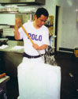

Careers
Employment - Full Time Position

Duties Include:
- Food preparation
- Dish-up and dessert making
- Required to have experience, references and enrolment in appropriate TAFE course
- Applicants with interest and/or knowledge of Japanese cuisine and culture favourable
Working Hours
- Mon - Fri (Lunch and Dinner), Sat (Dinner only)
- No Sundays or Public Holidays
- Rate of pay is industry award
Applications
To apply, please send your CV to Onimusha@Onimusha.com.au or for more information please call on 04 3213 3333.